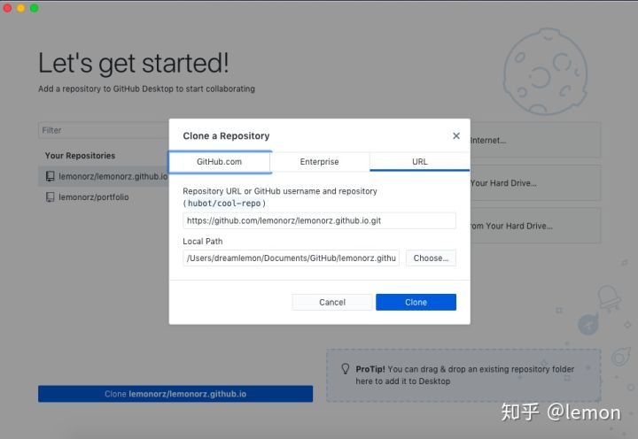

VS Code 代码编辑器入门指南：核心组件与概念
什么是代码编辑器
如果此前对「代码编辑器」没有任何概念，我们可以和文本编辑器（写作工具）进行类比，就是为了更好更方便进行代码编写开发的工具。
提到代码编辑器，不少「工龄」较长的程序员第一反应都会是 Notepad++，这款代码编辑器发布于 2003 年并更新至今，非常经典。因为使用惯性和轻量的特点它目前依旧很受欢迎。不过在 2020 年的今天，有更多好用的代码编辑器值得向你推荐。目前比较受欢迎的代码编辑器主要有 VS Code、Atom 和 Sublime text 。它们各有特点也都有不少死忠粉，新手在初期都可以尝试。
另外你或许还经常人提起 IDE (Intergreated Development Environment)，和代码编辑器相比 IDE 更关注开箱即用的体验、对代码的智能理解和对大型项目的支持，因此相对「笨重」；代码编辑器则更加轻量，侧重于文件，对于语言和工作流的支持也更自由。
为什么选择 VS Code
Visual Studio Code（简称 VS Code）是一个由微软开发，同时支持 Windows 、 Linux 和 macOS 等操作系统且开放源代码的代码编辑器，它支持测试，并内置了 Git 版本控制功能，同时也具有开发环境功能，例如代码补全（类似于 IntelliSense）、代码片段和代码重构等。该编辑器支持用户个性化配置，例如改变主题颜色、键盘快捷方式等各种属性和参数，同时还在编辑器中内置了扩展程序管理的功能。 ——维基百科
瑞士计算机科学家 Erich Gamma （《设计模式》作者、 Eclipse 主要开发者之一） 2011 年从 IBM 来到微软后起初负责组建团队开发一款线上开发工具（Manaco），后来他们在这个工具的基础上开发了如今的 VS Code 并于 2015 年发布。VS Code 定位为一个 高性能轻量级的编辑器，为了保证主进程的稳定，插件系统运行在主进程之外，所有个性化功能都由插件系统完成，在 IDE 和编辑器之间找到一个比较理想的平衡。
在微软所有开源项目中，VS Code 是目前最受欢迎的一个。经过不同工具之间的比较，我最终选择 VS Code 的原因包括：
- 完全免费且开源，更新迭代稳定
- 跨平台编辑器，满足日常在不同系统中的使用
- 占用系统资源比较少，大文件打开速度快
- 插件丰富，扩展性极强
- 使用人数多且社区活跃，碰到问题和需求容易找到解决方案
从 0 到 1 开始使用 VS Code
下载与安装
VS Code 有两个不同版本：稳定版（Stable）每月更新；预览版（Insiders）每个工作日更新。两个版本可同时安装互不影响，在 官网 即可选择自己需要的平台和版本，本文使用的版本为稳定版 1.44.1。

客户端安装完成后，如希望通过终端启动 VS Code，可以按下 shift+command+p 调出命令面板，在搜索框内输入shell command 后找到并点击「Shell Command: Install 'code' command in PATH」即可。

VS Code 默认是英文界面，这里并不建议把默认语言修改为中文，因为在学习大量英文相关教程和说明时使用英文界面或许更容易操作。另外，VS Code 绝大多数插件都没有汉化，使用起来会中英混杂。
如果需要使用中文，依旧可以通过 shift+command+p 调取命令面板，然后在搜索框中输入 display 找到并点击「Configure Display Language」，这时会显示目前可以选择的语言或者安装其它语言。选择「Install additional languages...」后会跳转到相关语言插件，选择中文语言包安装并进行安装。安装完成后再次找到「Configure Display Language」后选择「zh-cn」后重启即可。

欢迎界面
打开 VS Code 后，未修改默认配置的情况下首先会看到「欢迎页面」。如下图，欢迎页面有五部分内容。首次使用不妨先花点时间浏览「学习」部分内容，其中交互式演练场（interactive playground）是新手了解 VS Code 好资料。

VS Code 主题与图标
在个性化设置部分点击「Color theme」可以选择一个你喜欢的主题。

除了主题之外，你还可以为 VS Code 选择一套自己喜欢的文件图标。点击左下角的「设置」图标，选择「file icon theme」。

然后选择「Install additional File icon theme...」会弹出可以安装的 icon 插件列表，例如 Material Icom Theme，点击安装后选择使用即可。
核心概念与组件

上面这张图展示了默认配置情况下 VS Code 的基本界面。
- 编辑器：在这里码字写代码
- 侧边栏：可以类比为 macOS 的扩展坞，姑且称为「组件坞」，这里会展示各种组件和插件图标。
- 组件内容：击侧边栏不同的组件后这里会展示相应显示组件内容。
- 面板：包括问题显示、输出、调试控制台和终端四个组件。问题面板会显示代码中的警告和问题，输出面板会呈现命令和插件的运行结果，调试控制台用来进行代码调试，终端则可以帮助我们直接在 VS Code 中进行命令行操作。
- 状态栏：可以类比为 macOS 的菜单栏 + 通知中心，这里会展示和文档及项目相关的简单信息以及部分插件提供的信息。
侧边栏及常用组件

默认情况下，侧边栏显示的五个组件分别是：资源管理器、跨文件搜索、源代码管理、启动和调试和扩展管理。随着后期安装插件的增多，侧边栏可以显示的组件数量也会越来越多，不过你可以通过右击侧边栏选择隐藏那些用不到的组件还可以拖动组件图标进行排序。
侧边栏显示的默认组件中「资源管理器」和「跨文件搜索」就是字面功能，分别用来浏览管理文件和进行内容查找替换，我们会在下篇中配合具体应用场景进行更详细的介绍。源代码管理和调试分别用于 git 一系列操作和 debug，如果你并非程序员，没有这方面的需求也可以选择将其隐藏。
扩展管理及插件
这一部分需要详细介绍「扩展管理」组件和「插件」这个概念。
如文章开头所言，VS Code 中为了保证主进程的稳定所有个性化功能的实现都将通过插件来完成，在下文的应用场景部分我们也会用到大量插件。我们可以把插件理解为 macOS 中的应用，而扩展管理则是 VS Code 的应用商店。

如上图，在组件显示部分可以看到已经安装的插件和推荐插件，所有你想找的东西都可以尝试在搜索框进行搜索。点击感兴趣的插件后会显示插件详情，其中包括详细介绍、作者和更新日志等内容。
需要说明的是，由于 VS Code 的扩展插件数量实在过于庞大，在浏览插件的时候系统已提供了一些过滤操作，点击 ··· 可以选择只查看安装的插件或者流行的插件等等。
更方便的是你还可以直接在插件搜索框中输入 @ 来进行快速过滤。

为了更方便的找到需要的插件，VS Code 支持按照类别进行查找，目前支持的类别如下图所示，包括语言支持、代码片段和主题等。

目前在官方的插件商店中，我们可以看到共有 12 类 20000 余款插件。如果你想开发自己的插件，可以进一步参考 官方插件 API 。

命令面板
VS Code 作为一个代码编辑器，它本身有两个比较极客的设计思想。一个是基于文本（命令）的交互界面，另一个是基于文本的系统设置。基于文本的交互界面就是这里提到的命令面板，系统设置将会稍后介绍。
命令面板的存在提供了一种全新的使用逻辑，熟练使用后可以极大提高效率，因此对命令面板有基本了解是上手 VS Code 的关键。其实在上文安装命令行启动以及设置中文支持时我们都用过它，shift+command+p 就是调用命令面板的一种基本方式。
命令面板的高效在于其可以通过输入框中的第一个字符来触发不同功能。
如下图所示，当你按下 shift+command+p 时，命令面板的输入框会自动出现一个 > 它意味着此时命令面板认为你想要搜索相关命令并执行。

当删除 > 后会看到命令面板切换到了「访问最近文件」状态。如果你想在调用命令面板时直接访问最近文件，快捷键是 command+p。

如果此时输入 ? 会触发命令面板的「帮助」功能，我们可以看到支持哪些操作。下图中显示的切换文件、>执行命令、@符号跳转等我们在后续的应用场景中都会提及。其他单词缩写也代表了对应的操作，例如edt接空格可以管理打开的编辑器，term接空格可以打开或管理终端。

修改设置
在下篇介绍中，我们会涉及到更改默认设置的内容，因此有必要了解 VS Code 更改设置的方法。
VS Code 目前已经有了比较完善的图形化设置界面，只需要使用 command+, 就可以调用。

如上图所示，设置面板已经列出了用户常用配置内容，你可以寻找自己想要改变的东西，但是这里更加推荐直接在搜索框里搜索。此外，VS Code 的配置分为用户（User）和工作区（workspaces）两个层级，其中用户配置会对全局生效，工作区配置只会对当前所在的项目（目录）生效且优先级更高。
除了图形化界面以外，VS Code 的所有配置其实都写在 json 格式的一个文本文件中。你可以非常方便的调出该文件进行设置，只需要在命令面板中输入open sett 然后选择 JSON 即可。如果是针对工作区的设置，json 文件将会保存在工作区.vscode目录下。
在 json 文件中，你可以直接编写设置，也可以点击行号前的「笔形」图标查看可以更改的内容。之所以有必要了解如何通过配置文件更改设置是因为部分插件提供的复杂设置只能通过修改 json 文件完成。

工作区
工作区（workspace）是另一个需要了解的核心概念，它对应在 VS Code 中如何进行文件管理。
上文我们提到相比于 IDE 着重于项目管理，代码编辑器更加侧重于文件本身，VS Code 所有操作就是基于当前目录、子目录和其中的文件进行的。在下篇内容中我们会讲到很多操作和插件都会基于所在目录生成相关的配置文件，而这些文件通常都会被保存到所在目录的.vscode文件夹中。.vscode 文件夹中的各种配置决定了不同目录被打开时 VS Code 会启动哪些插件和配置。
随着项目逐渐发展，单一文件夹往往无法满足我们的开发需求，VS Code 通过工作区这个概念解决了同时操作多个文件夹的问题。简而言之，当你使用 VS Code 打开一个文件夹后可以在命令面板中搜索运行 add folder to workspace，然后选择想要打开的其它文件夹，此时就会显示一个尚未保存的工作区。

当所有文件夹添加完成后在命令面板执行 save workspace as 选择我们的工作区名字和要保存的位置，就可以对该工作区进行保存。

这时我们会看到一个名字后缀为code-workspace的文件，其本质依旧是一个 json 格式的配置文件。其中包括了文件夹的相对路径以及针对工作区的其它设置。

此外，记住两个目录切换的快捷键也会大大提高效率，ctrl+r 可以快速查看并切换最近打开的文件夹，ctrl+w 则可以快速在所有打开的 VS Code 窗口中进行切换。
语言支持
作为一个代码编辑器，VS Code 提供了统一的 Language Server Protocol 和 Code Debugging Protocol API，所有语言支持都能够借助这两个 API 在 VS Code 上得到类似 IDE 的开发和调试体验。
程序员可能最关心的内容就是对编程语言的支持，但初学者最不需要担心的其实也是这部分内容。到目前为止常用的主流编程语言在 VS Code 中都得到了很不错的支持，你需要的往往只是安装对应语言插件和进行一点基本配置。这些语言包括基础的 Markdown 和 JSON，以 HTML、CSS 和 JavaScript 为代表的多种前端语言和以 Python、Java、Go、C#、PHP 等为代表的大量后端语言。对于一些在程序员群体中相对使用人数较少的编程语言，例如 R 和 Julia 等也都有插件提供支持。下图为官网展示的几个流行语言插件。

如果想查看自己使用的编程语言是否支持，可以在 插件商店 中查找。此外，当你用 VS Code 打开一个文件时，系统会根据文件名后缀自动提示你安装与之相关的语言插件，非常方面。
这一部分我们也会在下篇中结合具体的应用场景进行介绍。
常用快捷键
提倡使用使用快捷键，主要目的是提高效率尽量让双手不离开键盘。快捷键的使用开始看似是一件更浪费时间的事情，但是随着肌肉记忆和熟练度增加效率将会大大提高。
如果你是从其它编辑器切换到 VS Code 完全可以移植之前熟悉的快捷键配置，比如 Vim, Atom 或者 sublime。如果是一个新手，下图是我自己日常用到的 VS Code 高频快捷键，供参考。

如果需要查看所有快捷键，可以通过 ctrl+K ctrl+s 进入快捷键设置界面或者直接查看官方文档。
以上就是 VS Code 编辑器入门指南上篇的内容，介绍了什么是代码编辑器、为什么选择 VS Code 、从 0 到 1 开始使用 VS Code 以及上手 VS Code 需要了解的核心概念与组件。有了这些知识储备，在下篇中将会介绍 5 个 VS Code 实际应用场景，进而更好的了解 VS Code 的特性和插件。


MWeb + Github Pages 搭建个人博客/静态网站
1、打开GitHub Pages
链接https://pages.github.com/ ，可以直接按照上面的操作指引来操作
(1)创建 github repository
官网说明如下图，需要先注册登录GitHub，然后创建repository，命名方式为http://username.github.io，注意用户名(前后两个输入框)保持一致。

（2）git client
我使用了桌面客户端（下载链接 https://desktop.github.com ）

（3）下载 GitHub desktop 并登录，选择你创建的repository，并点击clone按钮。然后就可以看到本地的克隆文件的路径。


2、下面先转到MWeb这里，下载并使用MWeb创建静态网页
MWeb是一个简单易用的markdown工具，还可以生成静态网站，不过要付费。
（1）首先左下角新增静态网站分类

（2）对这个站点的名称、模版等进行设置

（3）在里面写一篇文章，然后选择生成网站

(4)生成网站后，还是在这个下拉菜单中选择“在finder中显示网站生成位置”，就会定位到本地文稿所在位置。

(5)将这里的所有文件复制到 github在本地的克隆文件中
3、最后一步，文件上传与同步
打开GitHub desktop，左边栏中就是我们要同步的新增文件。点击左下的commit，然后点击右上角的push按钮。这样就OK了，你可以访问一下你的网站（http://username.github.io）看看效果了～


.assets/4a407484dfb44ea0ad31738ddf673099.jpg)

Docker 必备可视化工具 Portainer
推荐使用 Portainer 作为 docker 容器的 GUI 管理方案。
Portainer 是一个开源、轻量级 Docker 管理用户界面，基于 Docker API，提供状态显示面板、应用模板快速部署、容器镜像网络数据卷的基本操作（包括上传下载镜像，创建容器等操作）、事件日志显示、容器控制台操作、Swarm 集群和服务等集中管理和操作、登录用户管理和控制等功能。
官方地址：https://portainer.io/install.html
安装命令：
docker volume create portainer_data
docker run -d -p 9000:9000 -v /var/run/docker.sock:/var/run/docker.sock -v portainer_data:/data portainer/portainer
访问你的 IP:9000 即可进入容器管理页面。如果是本机的话访问地址就是: http:localhost:9000
运行效果:


参考资料：
docker：轻量级图形页面管理之 Portainer: https://blog.51cto.com/ganbing/2083051
Anaconda + VSCode 最详细教程
写在前面
为了录制这篇教程，我又把电脑上的 Python 卸载了🕹，重新安装 Anaconda 和 VSCode ，并录制动图。文章每个步骤介绍的很详细，只要跟着GIF动图一步一步操作就可以，适合零基础的朋友，通过这篇文章可以让你学会自己运行 Py 文件、以及一些发布出来的 Py 代码段，同时也是为了让更多人迈出学习 Python 的第一个门槛，后续也会写一些 Python 爬虫案例，用于工商信息查询、地址查询、快递查询等，所以为了这些工具，赶紧学起来吧📘。
现在 Python 的广告可谓铺天盖地，文章、朋友圈、各种网页基本都能看到，虽然有些广告确实夸大了 Python 的作用，标题很雷人，但是无论如何也反映了一种趋势，未来编程思维很重要。而我们看待 Python 等编程语言应保持客观，能够帮到自己那就值得花点时间学习，入门之后才知道是不是自己的菜。
「戏」说 Python

写在前面
为了录制这篇教程，我又把电脑上的 Python 卸载了🕹，重新安装 Anaconda 和 VSCode ，并录制动图。文章每个步骤介绍的很详细，只要跟着GIF动图一步一步操作就可以，适合零基础的朋友，通过这篇文章可以让你学会自己运行 Py 文件、以及一些发布出来的 Py 代码段，因为封装成 EXE 不方便调试和更新，同时也是让更多人迈出学习 Python 的第一个门槛，后续也会写一些 Python 爬虫案例，用于工商信息查询、地址查询、快递查询等，所以为了这些工具，赶紧学起来吧📘。
一、Anaconda 下载
Anaconda 可以看做Python的一个集成安装，安装它后就默认安装了python、IPython、集成开发环境Spyder和众多的包和模块，让你在管理环境和包时更加方便。
可以选择从官网或清华源下载 Anaconda 安装包，清华源下载速度相对较快。
安装的位数推荐32位，兼容性最强，也可以根据自己的系统位数选择安装。
官网：https://www.anaconda.com/products/individual

清华源：https://mirrors.tuna.tsinghua.edu.cn/anaconda/archive/

二、Anaconda 安装
安装过程中三个注意的地方：
- 勾选
Alls Users - 勾选
Add Anaconda to the system PATH environment variable - 如果之前没有安装 VSCode，可以在 Anaconda 安装过程中选择安装

三、VSCode 下载安装
Anaconda 安装过程中 VSCode 有时候可能会出错，导致安装失败，这种情况下可以选择从 VSCode 官网下载安装。
VSCode官网：https://code.visualstudio.com/Download#


四、管理 conda
1. 查看 conda 版本
安装完成后按Win+R打开cmd终端，输入conda --version
如果正常输出了 conda 的版本，说明 Anaconda 成功安装了。

2. 添加国内源
- 查看现有源
conda config --show-sources
- 添加国内清华源
conda config --add channels https://mirrors.tuna.tsinghua.edu.cn/anaconda/pkgs/free/
conda config --add channels https://mirrors.tuna.tsinghua.edu.cn/anaconda/pkgs/main/
- 删除默认源
conda config --remove channels defaults
- 设置搜索时显示通道地址
conda config --set show_channel_urls yes

3. 升级 conda
设置完国内源后，升级 conda 的速度会快很多，之后安装包时也会从国内源下载。
conda update conda
升级时弹出Proceed ([y]/n)?时，选择y，确认升级。

五、环境管理
可跳过，直接用默认环境
1. 查看 Python 版本
python --version
2. 创建环境
上一步查到我电脑上的 Python 版本为 3.7.0 ，我想在这个版本基础上创建一个名为 [虚拟环境名] 的虚拟环境。
conda create -n [虚拟环境名] python=3.7.0
新的开发环境会被默认安装在你 conda 目录下的 envs 文件目录下。

3. 激活环境
activate [虚拟环境名]
4. 列出所有的环境
conda info -e
当前激活的环境会标*。

5. 切换到另一个环境
activate [虚拟环境名]
6. 注销当前环境（默认的环境是base）
deactivate
虚拟环境激活后，在cmd中输入python，显示的就是一个新的环境。
7. 复制环境
conda create -n [虚拟环境名] --clone [参考环境名]
---常用
conda env --help #查看帮助
conda env list #列出所有的虚拟环境
conda list --name [虚拟环境名] #查看指定虚拟环境下的package
#创建
conda create --name [虚拟环境名] [python的版本] [需要的包]
conda create --name myenv
conda create --name myenv python=2.7
conda create --name myenv pytohon=2.7 numpy scipy
#克隆
conda create --name [虚拟环境名] -- clone [clone的环境]
#创建一个和原python环境一样的虚拟环境
conda create --name mybase --clone base
8. 删除环境
conda remove --name [虚拟环境名] -all
六、包管理
1. 查看已安装包
conda list
2. 使用 Conda 命令安装包
conda install beautifulsoup4
3. 通过 pip 命令来安装包
如果无法通过conda安装，可以用pip命令来安装包。
pip install beautifulsoup4
4. 移除包
conda remove beautifulsoup4
七、VSCode 配置
1. 安装 Python 插件

2. 安装 Code Runner 插件

3. 安装中文插件（可选）

4. 指定路径（可跳过）
确定当前激活环境所在路径

然后在File-->Preferences-->Settings-->Extensions-->Python-->setting.json添加下面的 Python 路径，这个路径和你设置的环境名称有关。
"python.pythonPath" :"D:\\anaconda3\\envs\\xiaolvshijie\\python.exe"


八、开始运行 Py 文件
运行代码前一定要按Ctrl + S保存，再右键选择Run Code或者用快捷键Ctrl + Alt + N执行代码。
1. 运行简单代码测试
print('hello xiaolvshijie')

2. 运行 Py 文件
复制下面这段代码到编辑器中，Ctrl + S保存，再右键选择Run Code执行代码。
import prettytable as pt
tb = pt.PrettyTable()
tb.field_names = ['Author', 'wwcheng']
tb.add_row(['ID', 'xiaolvshijie'])
print(tb)

会出现报错提示：ModuleNotFoundError: No module named 'prettytable'
意思是当前环境中缺少prettytable的包，你需要安装这个包。。
我们可以用conda install prettytable或者pip install prettytable来安装这个包。
如果不知道报错提示的意思，可以利用搜索引擎，百度一下你就知道，Python编程相关的问题网络上基本都能搜索到。
结语
成功安装 Anaconda 和 VSCode 并运行上面测试代码后，你可以正常加入码农行业。。。


Copyright © 2015 Powered by MWeb, Theme used GitHub CSS.